Recommended places for IT coupling components
This section describes the general logic for determining the best spots for placing coupling components through some comon use cases.
- Coupling elements should be placed in the model where the dynamics in signals are lower. Usually these spots are next to capacitors, where the voltage should change slowly, or next to inductors, where the current changes slowly.
- The red side of the coupling component represents the current source side of a coupling. This side should be rotated towards a slow changing voltage, usually voltage source or capacitor.
- The green side of a coupling component represents the voltage source side of a coupling. This side should be rotated towards a slow changing current, usually a current source or an inductor.
These are general rules. It is not always possible to place a coupling component in an ideal position. Power electronic circuits are highly dynamic. Each switch permutation can modify the topology in a way that could cause a capacitive circuit to become more inductive, meaning a circuit snubber might be needed. The following examples will illustrate some of the common circuit partitioning patterns.
Capacitive DC link coupling
This pattern usually occurs in voltage source converters. This is illustrated by an example of a three-phase back-to-back converter. Some topologies that have the same partitioning pattern are PV systems, where there is a DC-DC stage, DC link capacitor followed by a three phase inverter.
Two converters, shown in Figure 1, are coupled through a large DC link capacitor. The circuit must be partitioned since the overall weight of converters is 6. The converters have to be in separate cores. The coupling component should be placed in a spot where the dynamics are low. In this case, the DC link capacitor is where the voltage changes more slowly.
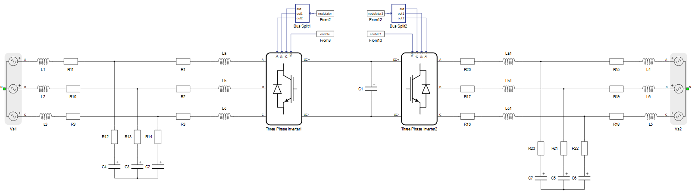
There are two feasible positions for the coupling component. On the left side of the capacitor, or on the right side. In this case, both solutions are equally valid. Rotation of the coupling component is important. The red side of a coupling component should be connected in parallel with the capacitor.
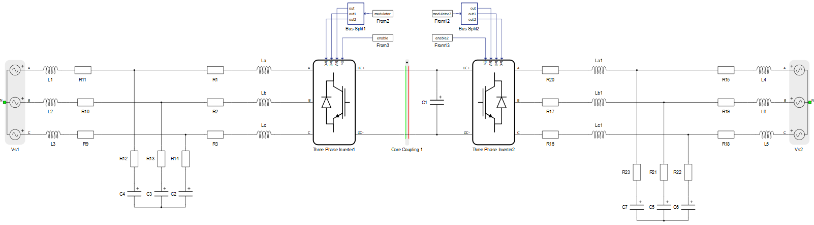
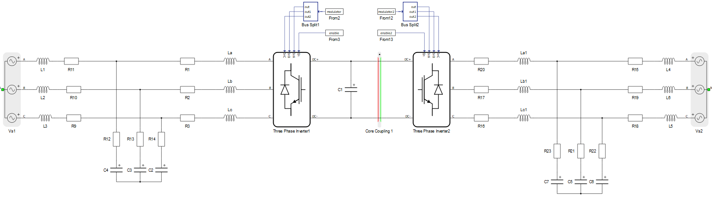
When the coupling component is placed as shown in Figure 2 or Figure 3, a warning that there is a topological conflict will appear. The conflict in this circuit will appear on the green side of the coupling component, which is the voltage source side. Topological conflicts will be present only during a short circuit in the converter. In that case we have a short circuit in parallel with the coupling’s voltage source. During regular work, this warning can be ignored. If we want to solve the warning, we can enable a dynamic resistive snubber on the voltage source side of the coupling component.
Inductive DC link coupling
Current source converters are usually coupled through large DC link inductors. An example model is shown in Figure 4. The weight of each three phase thyristor rectifier is 3. The circuit needs to be partitioned in a way that each thyristor rectifier ends up in deferent sub-circuit. In other words, the circuit needs partitioning on the DC link inductor.
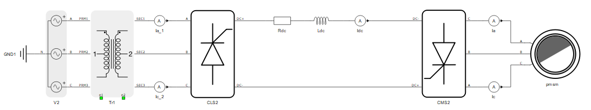
There are also two possible options to place the coupling component – on the left side of the inductor or on the right side. In this case these two solutions are not equally good, since the circuit is not symmetrical.
In the first option, shown in Figure 5, the coupling component is on the right side of the DC link inductor. The voltage source side of the coupling component is rotated towards the DC link inductor. However, on the current source side of the coupling component, we have several issues to address.
The first issue is that this side is also inductive by nature, since we have a synchronous machine. Electrically, the synchronous machine is represented by current sources with snubber resistances in parallel. In regular operation, the coupling’s current source is connected in series with the machine’s current source. Thanks to the snubber resistances in the machine, there will be no topological conflict due to a current source being in series with another current source. So the first issue caused by the coupling placement is actually solved by the snubber resistance in the machine.
The second issue occurs when the thyristors on the machine side are not conducting. Thyristors that are not conducting are represented as open switches. An open switch can be seen as a current source with zero current. During this thyristor permutation we have a topological conflict where the coupling’s current source is in series with two open switches. Since this is a regular operating condition during start up, this case needs to be fixed by using a snubber circuit on the current source side of the coupling component. This snubber is needed only during this specific thyristor permutation, therefore it should be a dynamic snubber. The snubber option can be either a resistor or a resistor in series with a capacitor. An R-C snubber is the recommended option, since the steady state error is less, but the drawback is that it introduces artificial dynamics into the circuit.
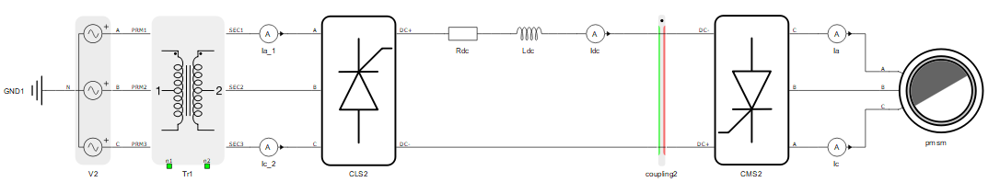
Another position for the coupling component is on the left side of the DC link inductor shown in Figure 6. The voltage source side, the green side of the coupling component, is rotated again towards the DC link inductor. Here we have the same issue that is described above, when the thyristors, now on the grid side, are not conducting. This issue can be resolved by using dynamic snubbers as explained previously. The second issue here occurs during regular operation of the grid side rectifier. When thyristors are conducting we have the coupling's current source connected in series with inductances on the secondary side of transformer. This can be resolved only by adding fixed snubbers in parallel with the coupling’s current source. A fixed snubber will introduce a constant error, and if it is an R-C snubber it will add artificial oscillations during transients.
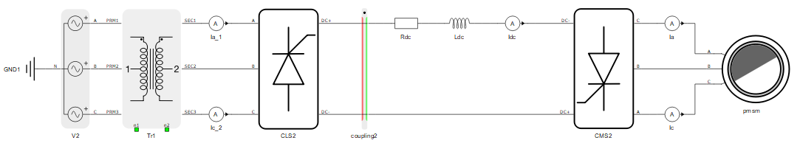
Out of the two described approaches, the first one (coupling on the right side) is better, since we can define a dynamic snubber that will rarely have an effect on the simulation.
Snubber parametrization is described in more details here.
Coupling in the output filter of converters
A common topology of a grid connected converter is a DC link followed by a three phase inverter with a filter on its output. In certain cases it is suitable to partition the circuit in the filter, since the dynamics should be lower than in other parts of the circuit. An example is shown in Figure 7. Partitioning of this model should be done in a way that in one core we have the converter part, while in other core the grid part with the additional switches. There are several options to do that. Remember that we are searching for lower dynamics in the circuit. One option would be to partition between the converter and contactor, but we would end up causing topological conflicts and we will need to add snubber circuits. This is doable, but a better option is partitioning in the filter, where we can avoid the need for additional snubbers.
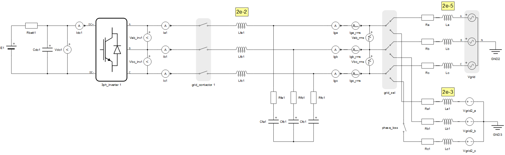
There are several options of how the circuit can be partitioned on or around the filter. One possibility is between the contactor and filter inductances. The drawback of this is that the current sources of the coupling would be faced towards switches that can be open. For those switch permutations, dynamic snubbers are required.
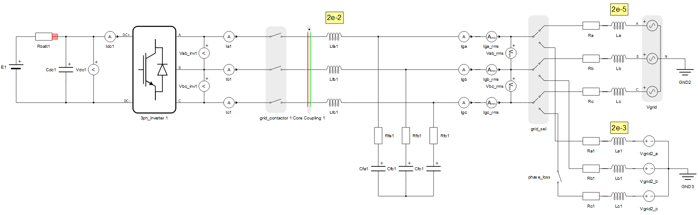
The second possibility is after the filter circuit as shown in Figure 9. The current source of the coupling faces towards the capacitors, while the voltage source is rotated towards the contactors and grid inductances. In this case, coupling will not introduce any topological conflicts.
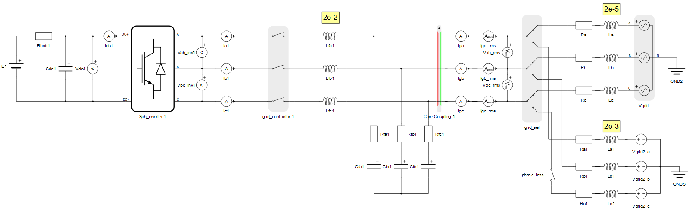
The third option is to place the coupling element between the filter inductances and filter capacitances as shown in Figure 10. The coupling does not introduce any topological conflicts in this case as well. The voltage source faces towards the inductances, while the current source of the coupling is rotated toward the filter capacitances.
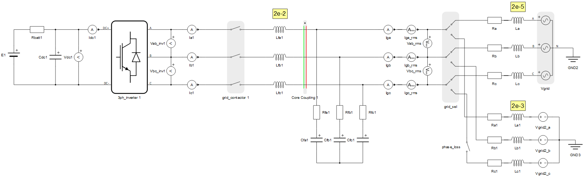
The question is which option is better, option two or option three. This depends on the circuit parameters. A general rule is that we should put the green side of the coupling component towards the “more inductive” side. In this case the more inductive side is determined by the inductance values. Filter inductances are 2e-2, while the largest inductance on the grid side is 2e-3. This means that the filter side is more inductive, therefore option three is the best solution for this circuit.
By using the coupling stability analysis option, the stability of the coupling component should be checked.
Converters connected in parallel
In Figure 11 an example of parallel connected converters is shown. This is the case when both, the DC side and AC side are fully paralleled. Partitioning must be done in a way that that we split the converters in separate sub-circuits. A good practice in cases like this is to preserve symmetry during partitioning, which will be shown through this example.
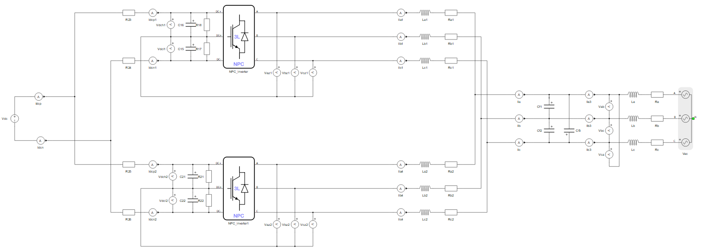
There are multiple ways that partitioning can be done. Since we would like to preserve symmetry in the circuit, coupling components should be placed on DC sides and AC sides of converters. On the DC side, it is straightforward; the coupling components should be placed between the DC voltage source and capacitors, leaving the resistors on capacitor side. The red side, the current source side of the coupling component, should be rotated towards the ideal voltage source. This should be done symmetrically for both converters.
On the AC side, we have a circuit partitioning on the filter as described previously. This is shown in Figure 12. The coupling component can be placed between the filter inductors and filter capacitors. Filter inductors are larger than grid side inductors. No snubbers are needed.
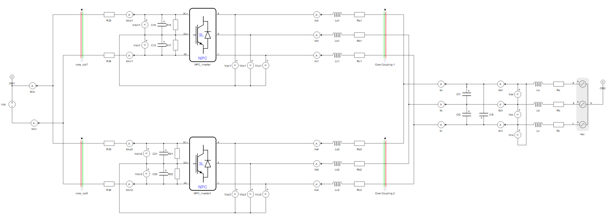
At first look this was an easy circuit partitioning, but after a more detailed inspection we can see that the circuit is fundamentally modified. With the presented partitioning, we are disabling the common mode current of the converters. If we apply the 1st Kirchhoff’s Law on the grid side of the converters, we can conclude that the sum of 6 converter phase currents equals to 0.
Ia1+Ib1+Ic1 + Ia2+Ib2+Ic2 = 0
If the circuit is partitioned as in Figure 12, using the three phase coupling components, we are forcing the sum of each converter's currents to be 0.
Ia1+Ib1+Ic1 = 0
Ia2+Ib2+Ic2 = 0
Thus the circuit partitioned in this way is not going to model the common mode currents of converter, only the differential mode. If common mode currents are not of interest, this way of partitioning is acceptable.
If common mode currents are important, than a different coupling approach should be considered. The thinking is as follows:
- The circuit must be partitioned on the three phase lines of each converter.
- The common mode current is required, thus the sum of the three phase currents cannot be 0.
- Because of that, if the sum of the phase currents is not zero, we need a fourth wire that will emulate the difference – so four phase coupling components need to be used; this is shown in the circuit in Figure 13.
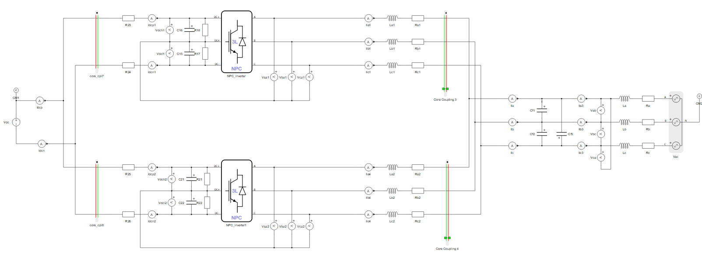
- Lastly, we must connect the fourth wires. The fourth wire is not a real existing wire in the original circuit. The current flowing through this wire should not flow through any of the converter components. In this case, the best spot is the DC- node, next to the DC side coupling component. This is done symmetrically in both converters. In other words, the fourth phase of the coupling component represents the DC- node. On the grid side we still have to connect the fourth wires of red side of the coupling components. Since they represent the same DC- node, we can just short them. This is shown in Figure 14.
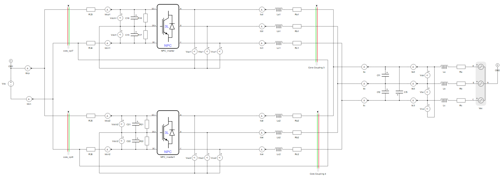
If the model is compiled, we will get a warning that the coupling components are degenerated. In order to solve this, fixed snubbers are required, and specifically an R-C snubber works best. Note that snubbers are always in the circuit, through all switch permutations introducing some fixed simulation errors and additional dynamics.
After finally placing and connecting the four phase couplings, we encounter the described topology conflict. Now it is time to re-think if there is maybe another better possition for them. There is, which is on left side of the filter inductances, as shown in Figure 15. In this case, dynamic snubbers solve the topology conflict during the case where all switches in a phase leg are open.
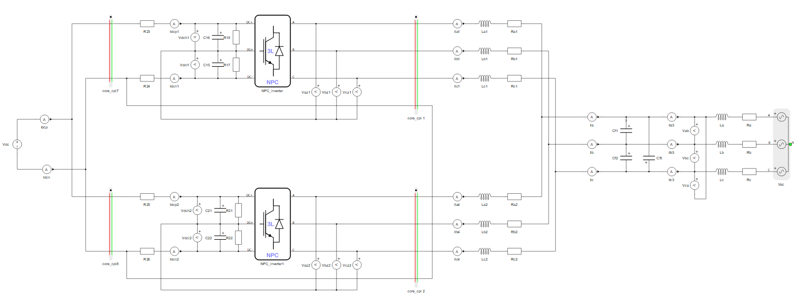
Series connected converters
Modular multilevel converters are a good example of series connected converters. One of them is shown in Figure 16. There are in total 12 single phase inverters in the model. The weight of a single phase converter is 1, which for the full model adds up to 12 overall. At first look it seems that we can partition the circuit in four cores (assuming that the core supports converters up to weight 3). However, the single phase inverters introduce a large number of permutations by themselves. If three single phase converters are placed in one core, a compilation error will be reported that the matrix memory utilization is over 100%. In other words, only two single phase inverters can fit in one core, so for the shown model, 6 processing cores are required.
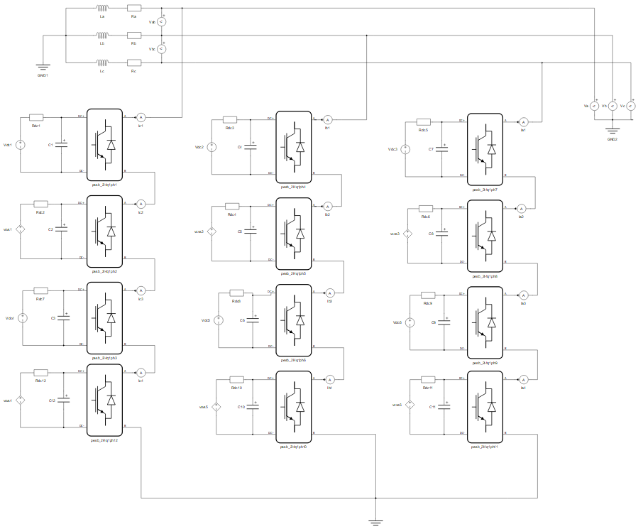
Coupling should be done in a way that two converters remain in the same core. If we extract two converters from the overall model, it will be obvious how partitioning should be done. This is illustrated in Figure 17. There are two connection points between the two converters and the rest of the circuit, which means a single phase coupling should be used. The red side should be rotated towards the converter (it is a voltage source type of converter), while the green side should be rotated towards the inductive grid. Dynamic snubbers are required on the current source side in switch permutations where all switches of converters are open.
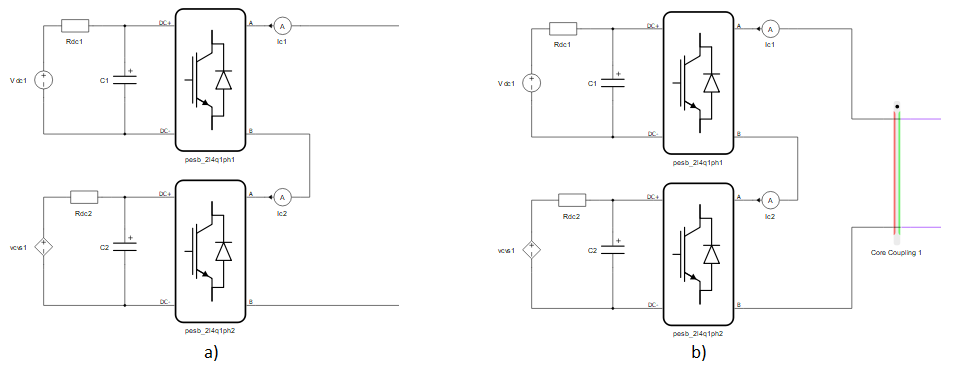
If we apply this to the whole circuit we get the circuit shown in Figure 18. Two converters remained in the same sub-circuit with the grid. The rest of the converters are grouped as described above.
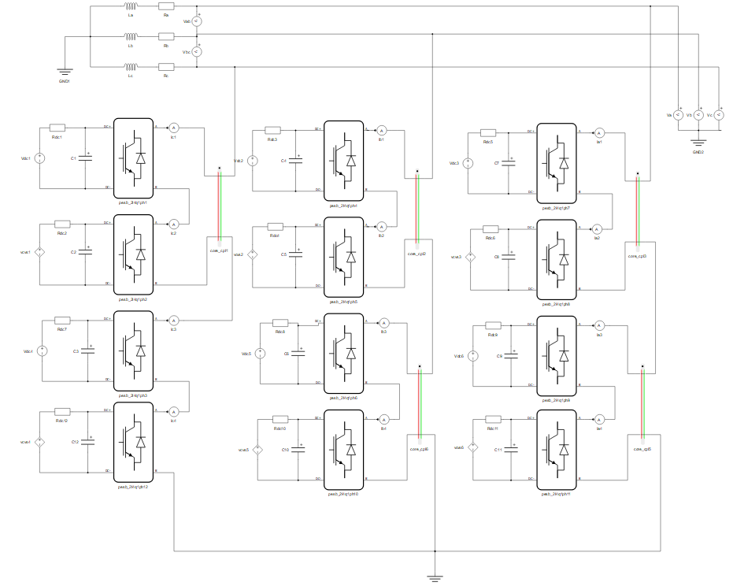
Power systems/microgrid circuit coupling
A typical use case in microgrid or power systems circuits is shown in Figure 19. Lets assume that the partitioning needs to be done in a way that the left transmission line is in one sub-circuit, while the right side transmission lines are in other sub-circuit. Since there are four wires, three phases and a ground, a four phase coupling should be placed after the left transmission line. Rotation of the coupling in most cases like this is not important because we are coupling an inductive sub-circuit with another inductive sub-circuit. If one side has significantly larger inductances, the green side should be rotated towards it. Regardless, fixed snubbers on the red, current source, side of the coupling component are unavoidable, and an R-C snubber is recommended. If the snubber would not be in the circuit, all series inductances will be degenerated – ignored, neglected.
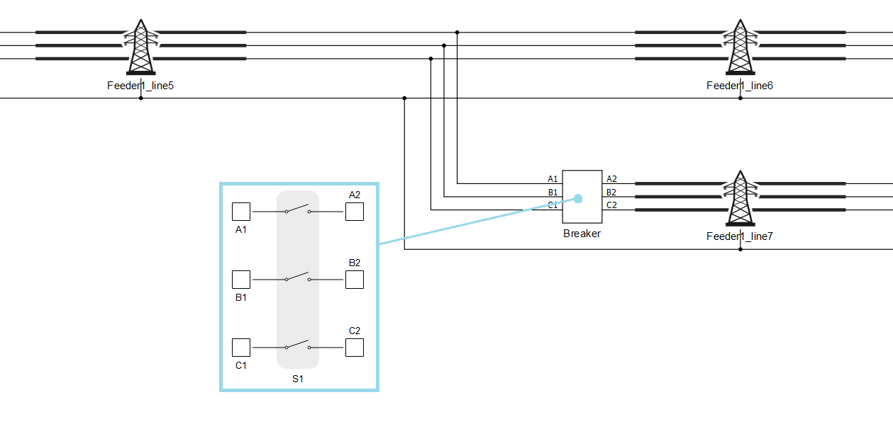
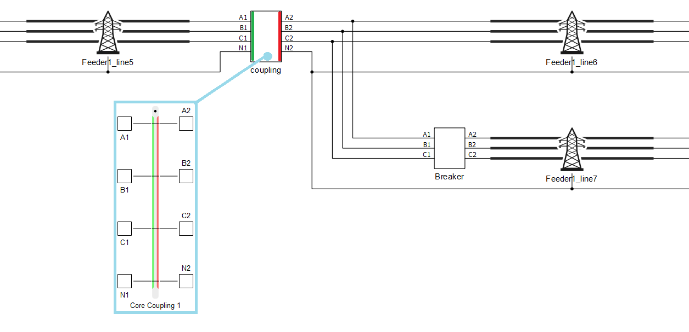
Connecting complex DERs to microgirds
An example of a complex distributed energy resource (DER) model is shown in Figure 21. It is a switching model of a battery storage unit. This is a complex model and usually requires one full processing core to be simulated in real time.
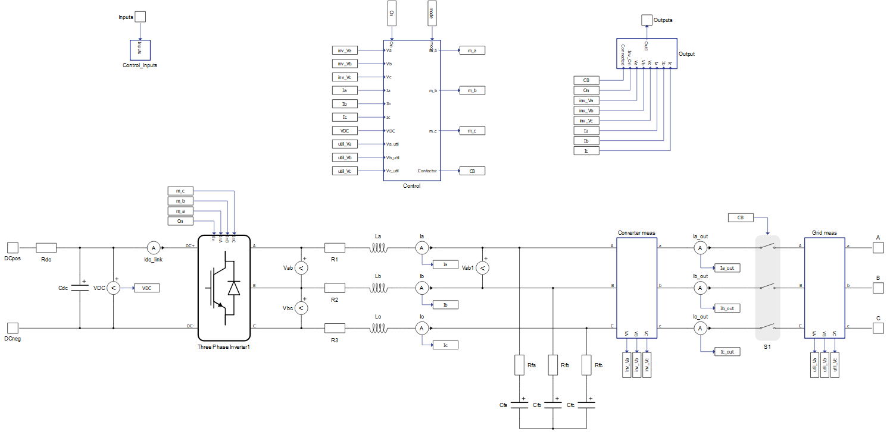
A typical use case is when the storage is connected to a transformer or transmission line cable directly. This is illustrated in Figure 22. If ground or neutral are not important, a three phase coupling should be used, otherwise a four phase coupling component is needed. Usually DERs are voltage source type converters, so the current source side of the coupling component should be rotated towards the converter. Usually at the output of the DER there is a circuit breaker. A snubber in the coupling component is needed to resolve the topological conflict when this circuit breaker is open. This can be solved by both dynamic and fixed snubbers. Which one should be used depends on the configuration of the filter output stage of the converter. If an L-C filter is used, as in Figure 22, a dynamic snubber is a way to go. If the filter is L-C-L, then a fixed snubber is needed to avoid filter inductance degeneration by the coupling’s current source. R-C snubbers are recommended.
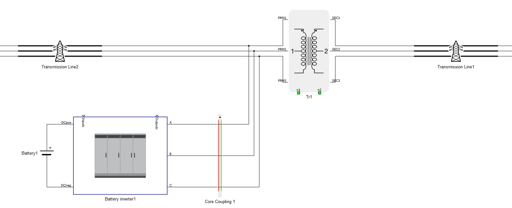